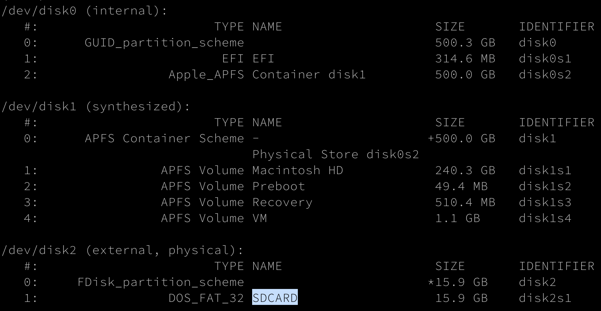

Edge Deployment
Raspberry Setup (Raspbian installation)
The Raspberry can be set up thanks to this Makefile.
First thing first, insert the SD card in your computer to mount it. Before typing any command, check that the SD card is effectively mounted on /dev/disk2, by typing:
$ diskutil list
Checklist before continuing:
- If the SD card is mount on another disk, edit the Makefile by replacing MOUNTING_DIR := /dev/disk2 by the disk seen thanks to diskutil command.
- If you flash a Raspbian image WITHOUT Desktop ONLY you will need to connect on ssh on the Raspberry. To be able to connect, you need the Raspberry to be in the same local network than your computer. Therefore, setup your WIFI credentials on the Raspberry by editing the wpa_supplicant.conf.template replacing ssid="YOUR-NETWORK-SSID" and psk="YOUR-NETWORK-PASSWORD" values.
- If you want to flash a Rasbian image with Desktop, edit the Makefile by replacing:
- RASPIOS := raspios_lite_armhf by raspios_armhf (Raspbian Desktop) or raspios_full_armhf (Raspbian Desktop + recommended Software) and
- RASPIOS_IMAGE_NAME := 2021-05-07-raspios-buster-armhf-lite by an existing image from here or here.
Then, type:
$ make raspbian
This command will request information from you and last about 10 minutes. Stay close to your computer until you gave your sudo password (at the beginning of the execution).
Then you are all set! With the last command, you just : 1. Formatted the SD card, 2. Downloaded the Raspbian Buster lite image from 2021-05-07, 3. Flashed the image on the SD card, 4. Enabled SSH connection after boot, 5. Setup WIFI credentials and eventually 6. Ejected the SD card.
You are now done and can insert the SD card in the Raspberry and make it boot.
For more details on what you just have done, see the following parts.
[OPTIONAL] Step-by-step Raspberry Setup
Identify SD card
In Terminal, type the following command:
$ diskutil list
You should see something like:

In this case /dev/disk2 is my SD card.
Format SD card
To reformat the SD card, go in the deployment directory and type:
$ make format-sd-card
Or:
$ diskutil unmountDisk $(MOUNTING_DIR)
$ diskutil eraseDisk FAT32 $(SD_CARD_NAME) MBRFormat $(MOUNTING_PATH)
The SD card will be formatted in FAT32 format under the name SDCARD with a Master Boot Record (MBRFormat).
Verify formatting
To check if the formatting was successful, use above command again:
$ diskutil list
Look for a disk named SDCARD like in the following picture:
Download the Raspbian image
It exists a lot of Raspbian images able to run on Raspberry. Here is an non exhaustive list: - Raspberry Pi OS with desktop and recommended software available here - Raspberry Pi OS with desktop available here - Raspberry Pi OS Lite available here
By default, you can download the Raspberry Pi OS Lite from 2021-05-07 by typing:
$ make download-raspbian-image
Or:
$ wget https://downloads.raspberrypi.org/$(RASPIOS)/images/$(RASPIOS)-2021-05-28/$(RASPIOS_IMAGE_NAME).zip -O $(IMAGES_DIR)/$(RASPIOS_IMAGE_NAME).zip
$ unzip $(IMAGES_DIR)/$(RASPIOS_IMAGE_NAME).zip -d $(IMAGES_DIR)/
Flash an image
Choose an image and then flash it on the SD card as followed:
$ make flash-raspbian-image-on-sd-card
Or:
$ diskutil unmountDisk $(MOUNTING_DIR)
$ sudo dd if=$(IMAGES_DIR)/$(RASPIOS_IMAGE_NAME).img of=$(MOUNTING_PATH) bs=1024
To check if the flashing was successful, use above command again:
$ diskutil list
Look for a disk named SDCARD like in the following picture:
Enable SSH and set WIFI credentials
Once formatted, to enable ssh and set your WIFI credentials, first edit ssid="YOUR-NETWORK-SSID" and psk="YOUR-NETWORK-PASSWORD" values in the wpa_supplicant.conf.template.
Then, type:
$ make setup-wifi-credentials
It will copy the file named wpa_supplicant.conf.template with the following content (network parameters) on the SD card as wpa_supplicant.conf:
ctrl_interface=DIR=/var/run/wpa_supplicant GROUP=netdev
network={
ssid="<YOUR-NETWORK-SSID>"
psk="<YOUR-NETWORK-PASSWORD>"
key_mgmt=WPA-PSK
}
To enable SSH connection after boot, you just need to create an empty file named ssh on your SD card by typing:
$ make enable-ssh
Or:
$ touch /Volumes/boot/ssh
Eject the SD card
To eject the mounted SD card, type:
$ make eject-sd-card
Or:
$ diskutil unmountDisk $(MOUNTING_DIR)
$ diskutil eject $(MOUNTING_DIR)
Install and configure the IoT Edge Agent on RaspberryPI
In order to be managed by Azure IoT Hub, each edge device must install an IoT Edge Agent and connect to the Hub.
We use Ansible to automate the setup of the IoT Edge Agent.
Install Ansible on the RaspberryPI
$ pip3 install ansible
Check Ansible is correctly installed
$ ansible --version
If ansible command is not found, add /home/pi/.local/bin to the PATH.
Define environment variables
For The moment, the RaspberryPI connects to the Azure IoT Hub using the connection string of the IoT Edge device identity.
We need to provide this connection string through an environment variable.
$ export CONNECTION_STRING="<primary_connection_string_from_iot_edge_device_on_azure_portal>"
Execute the playbook
The following command installs the necessary dependencies, creates the configuration file for the connection to IoT Hub, and applies the configuration.
$ cd <path_to_vio_edge_repo>/
$ ansible-playbook deployment/ansible/install_iot_edge_agent_on_raspberry.yml